Christian's Personal Diary
Name: Christian Jess L. Enopre
Age: 16
Status: Single
Address: Dasmariñas, Cavite
Birthday: January 31, 2008
Social Media:
FB -
@asocialkid
Motivational Quotes
You will come across misfortunes again, but don't let grief
corrode
your mind.
Learn from them and face the future with a smile. Only then will you truly be victorious.
― Sylvia
The moonlight's illumination makes it easier to see how pathetic you are.
— Sukuna
Relatable Lyrics
I used to dream, I used to glance beyond the stars. Now I
don't know
where we are, although I know, we've
drifted far.
— Michael Jackson, Earth Song
Walang masyadong mabagal. Walang mabilis. Sa pagtakbo ng buhay, hindi ka mimintis. Hingang malalim lang
at
tandaan, ika'y may hawak ng iyong hakbang.
— BINI, Karera
Favorites
Favorite Place: Bonifacio Global City, Taguig
Favorite Food: Katsu Curry
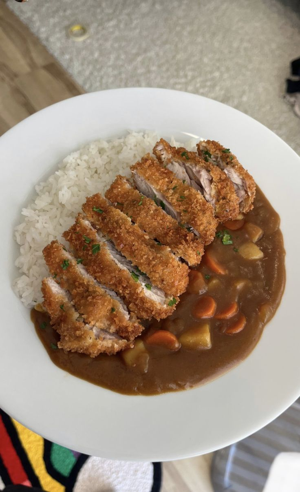
Favorite Songs: Karera, Best of Joy, Lagi
Favorite Artist: Michael Jackson, BINI
 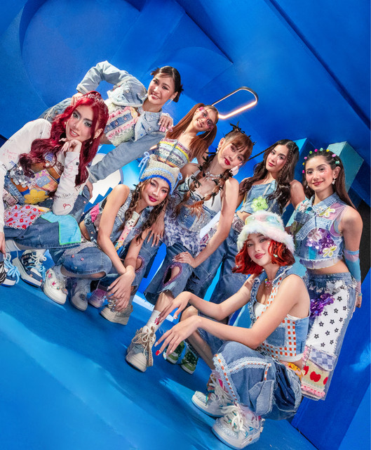
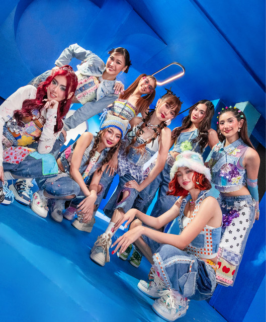
Favorite Hobbies: Coding, Studying, & Exercise
THREE things I
like:
- Webtoons
- Animals (esp cats ^__^)
- Pokemon
THREE things I dislike:
- People who hate cats or pets in general
- Being laughed at
- People who swear excessively
Dreams
Dream Profession: Software Engineer
Dream Pets: Ragdoll & Calico Cats, and an Aussie Dog
Dream Travel Destination: Japan
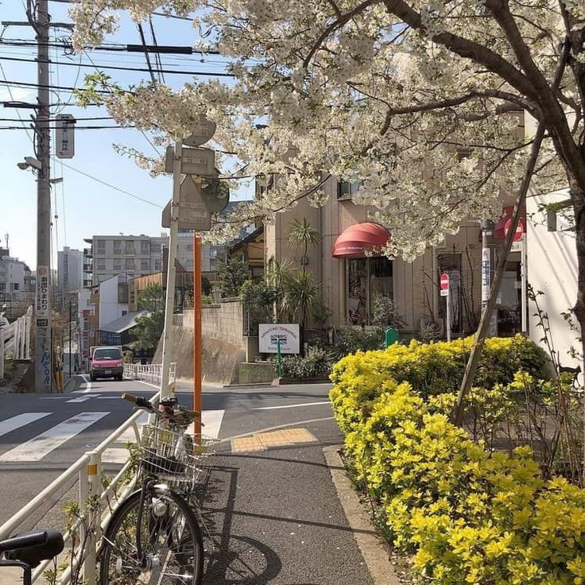
Dream Vacation: Philippines
Dream Country: Italy / Netherlands
Dream Experience: Being rich and impulsively buying
Jeah's
Personal Diary
Name: Jeah Lharice G. De Guzman
Age: 15
Status: Single
Address: Dasmariñas, Cavite
Birthday: May 10, 2008
Social Media:
FB -
@jeah.lharice
Motivational
Quotes
Talk to
yourself like someone you love.
― Brené Brown
Nothing happens unless first we dream.
— Carl Sandburg
Relatable Lyrics
They told me all of my cages were mental,
so I got wasted like all my potential.
And my words shoot to kill when I'm mad,
I have a lot of regrets about that.
— Taylor Swift, This is me trying
Stuck in this paradigm don't believe in paradise
this must be what hell is like there's got to be more, got to be more sick of this head of mine
intrusive thoughts, they paralyze nirvana's not as advertised there's got to be more, been here
before
— SZA, Saturn
Favorites
Favorite Place: Home
Favorite Food: Carbonara
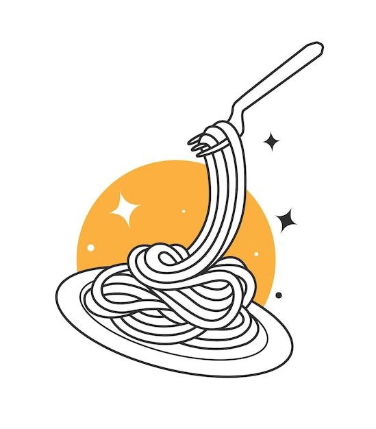
Favorite Songs: Salamin salamin, Saturn, Evermore, Seven, Sugar n Spice, Butterflies, All Too Well (10
minutes
ver.), My Tears Ricochet, Sweet Nothing.
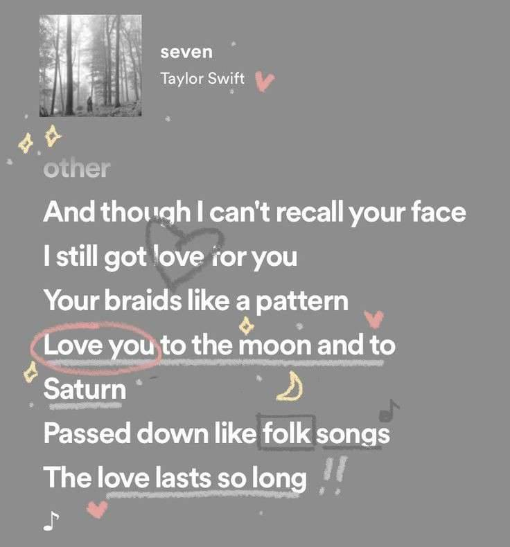

Favorite Artist: BINI, NIKI, Twice, New Jeans,Taylor Swift, Joji, Just Hush, & Denise Julia
Favorite Hobbies: Watching movies, TV Series, and Cartoons.
THREE
things I like:
- Animals
- Nature
- Books
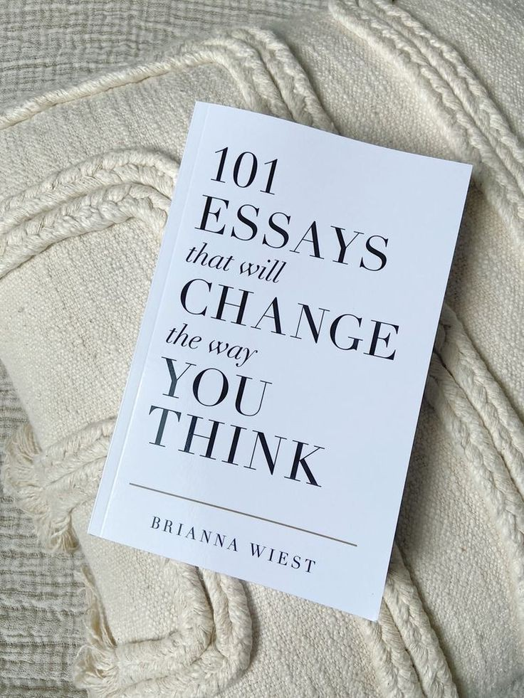
THREE
things I dislike:
- Entitled People
- Cockroach
- Being Pressured
Dreams
Dream Profession: Medtech
Dream Pets: Snake, Guinea Pigs, and Maine coon cat
Dream Travel Destination: Japan
Dream Vacation: Baguio
Dream Country: Japan / Spain
Dream Travel Experience: Be rich and go to Japan
Krishielle's Personal
Diary
Name: Krishielle Mae Ferrer
Age: 15
Status: Single
Address: Dasmariñas, Cavite
Birthday: August 17, 2008
Social Media:
FB -
@shelmehh
Motivational Quotes
Knowledge can change one’s destiny, and diligence will result in glory.
― Klein Moretti
Do not walk gently into that good night.
— An Zhe
Relatable Lyrics
You live in my dream state, Relocate my fantasy, I stay in reality
— Tyler, The Creator
People, they all come from the same kind But why are they comparing values and character with others
—
Takayan
Favorites
Favorite Place: Cavite
Favorite Food: Sweets
Favorite Songs: Jet Ammo, Just Disappear, Nakakapagpabagabag, The Hills
Favorite Artist: The Weeknd, Dasu, Takayan
Favorite Hobbies: Reading & Drawing
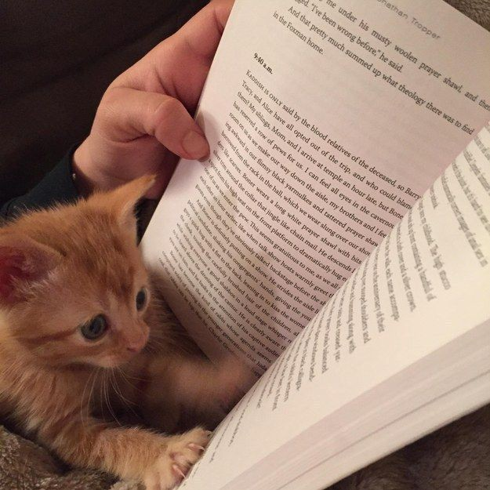

THREE
things i like:
- Novels
- Fruits
- Animals
THREE things I
dislike:
- insensitive people
- worms
- chocolate in general (aside from white chocolate)
Dreams
Dream Profession: Archivist
Dream Pets: Golden retriever, Ferret, and a Duck
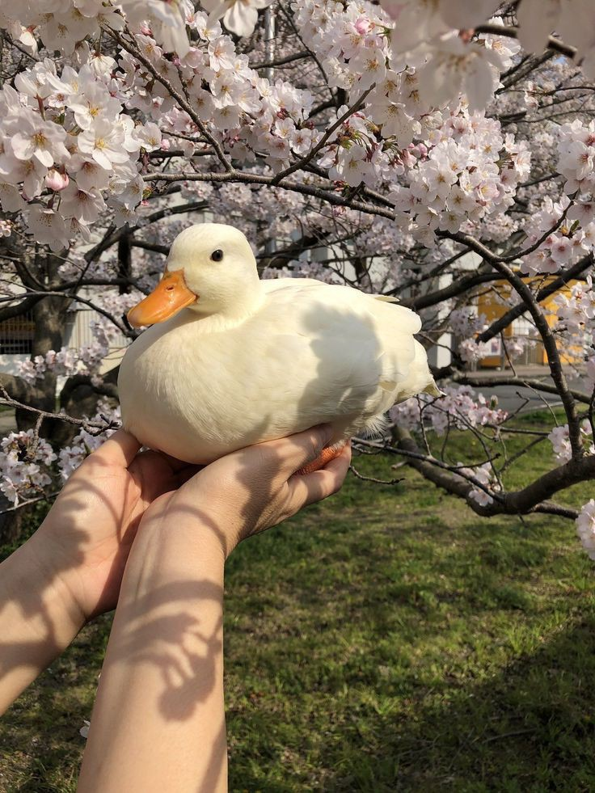
Dream Travel Destination: Japan, Sichuan, and Seoul
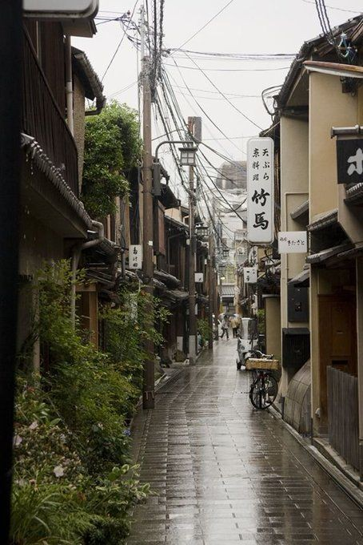
Dream Vacation: By the seaside
Dream Country: Japan or UK
Dream Travel Experience: Be rich and go to lotM themed cafe
Stephanie's Personal Diary
Name: Stephanie Nicole S. Garcia
Age: 15
Status: Single
Address: Block 4 Lot 15 Bellgum St. Sabang Dasmariñas Cavite
Birthday: April 24, 2008
Social Media:
FB -
@nics654
Motivational
Quotes
There are darknesses in life
and there are lights, and you are one of the lights, the light of all
lights.
― Bram Stoker, Dracula
I am not what I ought to be, I am not what I want to be, I am not what I hope to be in another world; but
still I am not what I once used to be, and by the grace of God I am what I am.
— Louisa May Alcott
Relatable Lyrics
And she cried over nothing
— TV Girl, Blue Hair
How am I supposed to tell ya?
I don't wanna see you with anyone but me.
Nobody gets me like you.
How am I supposed to let you go?
Only like myself when I'm with you.
Nobody gets me, you do
— SZA, Nobody gets me
Favorites
Favorite Place: Home
Favorite Food: Buttered Shrimp

Favorite Songs: backon74, passionfruit, violet, weekend, self control, ikaw lang, nananana, mansae

Favorite Artists: Sza, Frank Ocean, Clairo, PARTYNEXTDOOR, Brent Faiyaz, Don Toliver, Jhene Aiko, Summer
Walker,
Seventeen
Favorite Hobbies: Gaming, Drawing & Watching Series, Drama, or Movies
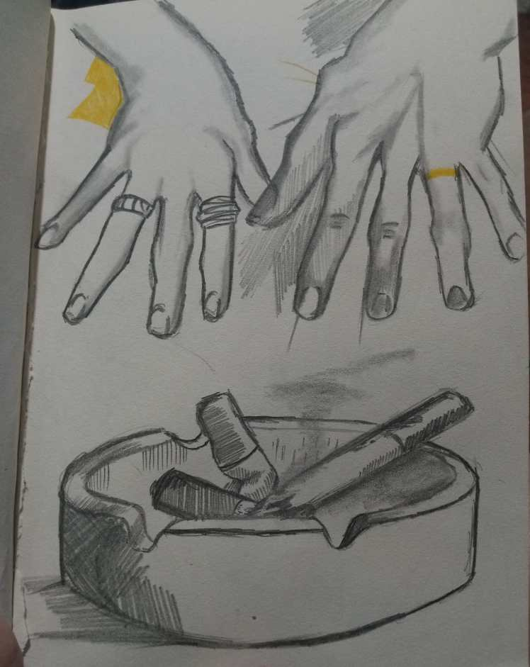
THREE
things I
like:
- Sleeping for 8-10 hours
- Skincare
- Animals
THREE things I dislike:
- fake/arrogant people
- feeling anxious
- being used and being left out
Dreams
Dream Profession: Filmmaker
Dream Pets: Pugs, Ragdoll cats, Bunnies
Dream Travel Destination: Italy, Maldived, Paris
Dream Vacation: Anywhere that has a beach
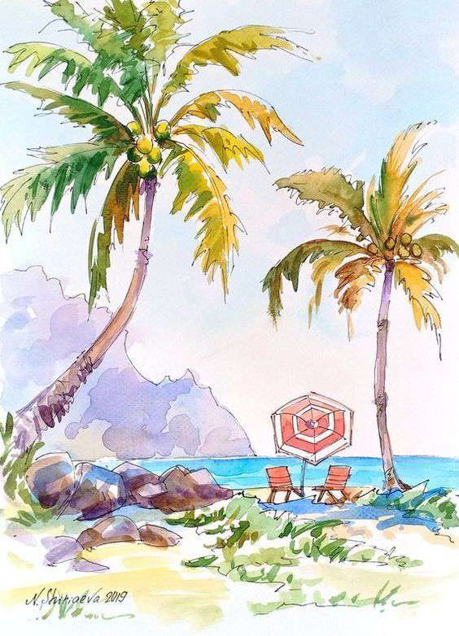
Dream Country: Sydney, Australia
Dream Travel Experience: Be rich and travel all around the world